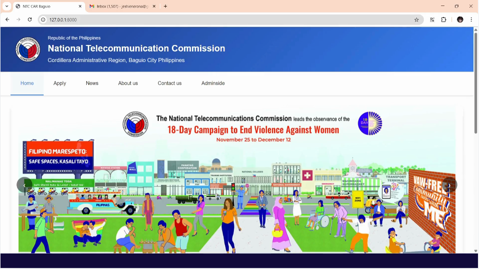
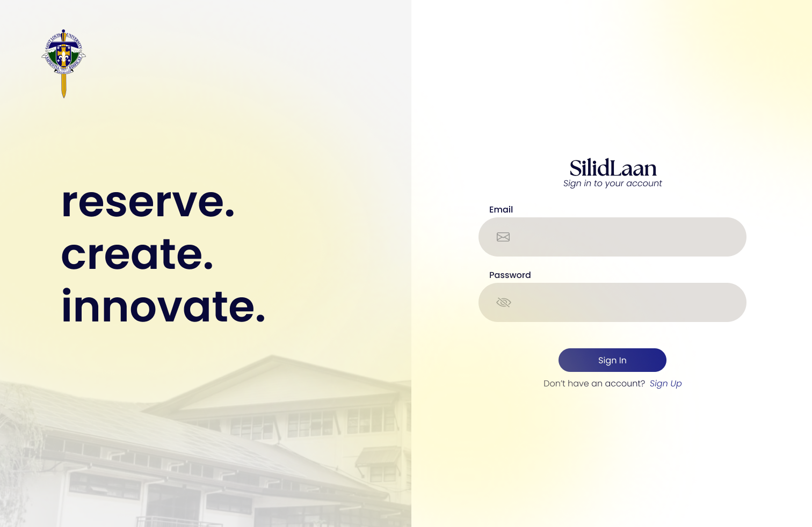
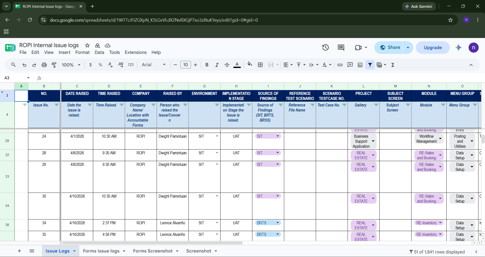
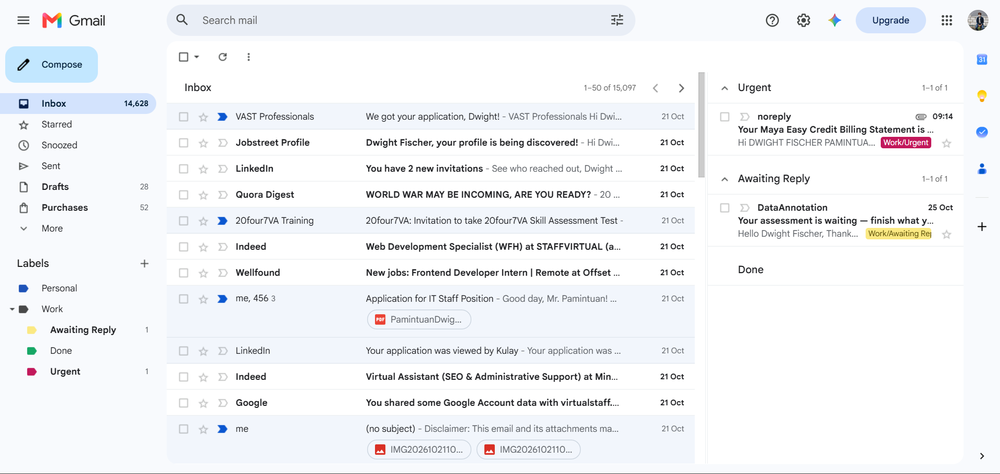
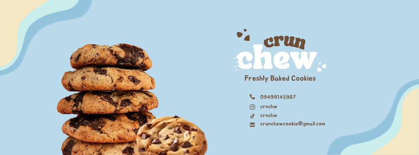
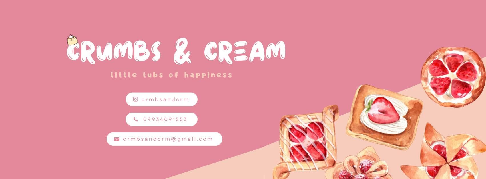

Website & IT Support
Helping maintain websites, identify issues, and keep digital experiences working as expected.
I’m Dwight, an Information Technology graduate helping teams keep their websites, data, and day-to-day digital work organized and running smoothly.

01 / A LITTLE ABOUT ME
I’m a Cum Laude Bachelor of Science in Information Technology graduate with hands-on experience in website quality assurance, data verification, website management, and technical tasks.
During my internship as a Business Application Developer Intern, I helped test website functionality, verify system-generated information against business rules, document issues, and work with developers to improve accuracy.
I bring that same careful, problem-solving approach to virtual assistance: keeping information organized, maintaining digital content, and helping remote teams stay on track.
02 / WHAT I CAN DO
A mix of technical understanding and dependable operational support.
Helping maintain websites, identify issues, and keep digital experiences working as expected.
Testing workflows, checking data accuracy, and documenting issues clearly for follow-up.
Organizing information and supporting recurring administrative and website tasks.
03 / TOOLS I WORK WITH
Tools for building and maintaining websites, creating visual content, and working more efficiently.
Website building, updates, and technical troubleshooting.
Visual content, layouts, and interface design concepts.
Using AI as a helper for ideation, research, drafting, and organizing work, with human review for accuracy.
Keeping information organized and checking work carefully.
Tools listed reflect the technologies and capabilities presented in this portfolio. Keep this list aligned with your hands-on experience.
04 / SELECTED WORK
A selection of academic and demonstration work. Project details can be expanded as you prepare each case study.

A web-based certification workflow concept designed to organize applications, track request statuses, and support administrative processing.

SilidLaan is a resource reservation website designed for Saint Louis University students and personnel

A summary of testing practices: checking forms and generated data, comparing results with business rules, and documenting issues.

Provided virtual assistance by maintaining and updating website data, supporting SEO and digital optimization tasks, and delivering technical support.

Creating engaging content, managing social media accounts, developing marketing strategies, interacting with customers, and monitoring online performance to increase brand awareness, engagement, and sales.
View Page ↗
Creating engaging content, managing social media accounts, developing marketing strategies, interacting with customers, and monitoring online performance to increase brand awareness, engagement, and sales.
View Page ↗05 / HOW I WORK
I believe good support is more than finishing a task. It means understanding the goal, checking the details, and communicating clearly along the way.
Clarify the task, expected result, and priorities before getting started.
Keep information organized, check accuracy, and test work before handing it over.
Share progress, document issues, and flag blockers early.
06 / LET'S CONNECT
I’m open to remote opportunities in virtual assistance, website support, QA, and IT-related work.
dwightfischer2330@gmail.com